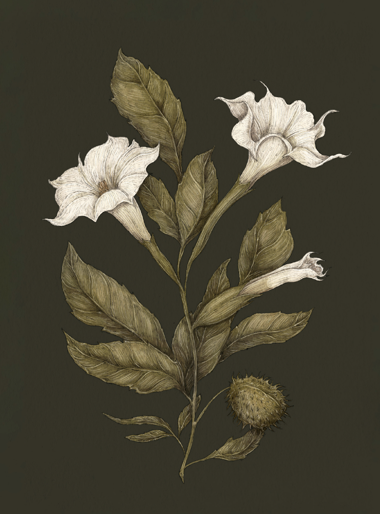

Plate DATURA
The Language of Flowers
Datura Study

Datura
Datura
Definition: A flower associated in floriography with deceitful charms and beauty that conceals danger.
Meaning
Deceitful charms
Origin
Datura, while it may charm you with its beautiful appearance, is extremely poisonous if ingested. The
flowers, also known as "devil's trumpets," are said to have been used in early European witchcraft as
an ingredient in the ointment that allowed witches to fly on their broomsticks.
Pair With
- Wormwood for a spurned lover
- Thistle for a friend going through a breakup